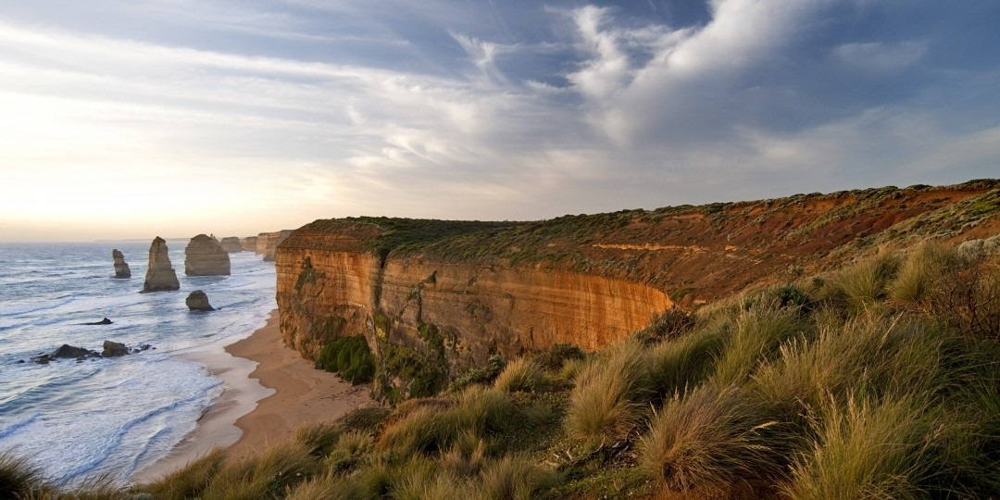

The sights of the world are a huge number of popular and little-known ancient and modern, man-made and natural objects of history, culture, architecture, archeology, scattered in various centers of deceased and now existing civilizations on planet Earth.
The world is so diverse, multifaceted and curious that year after year to spend a vacation spreading out on a beach lounger and peering into the turquoise blue of the depths of the sea is simply stupid. After all, today thousands of places around the world are available to Russian tourists. Moreover, each of them can offer something of its own to the sufferer of new impressions and knowledge. Hundreds of peoples live or have lived on each continent with their own history, culture and customs. And all of them left behind traces on the body of the planet that can tell a lot about them. Is it possible, knowing all this, not to rush to explore our planet?
The Earth is replete with places that fascinate with their beauty. Millions of tourists from all over the world go to them every year, who return from there with a bunch of photos, videos and, most importantly, memories.
